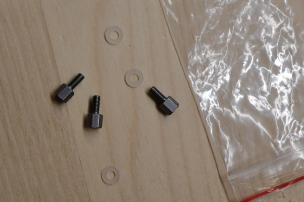
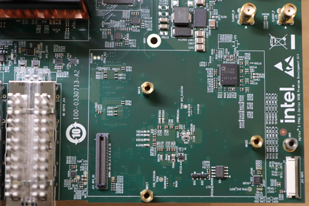
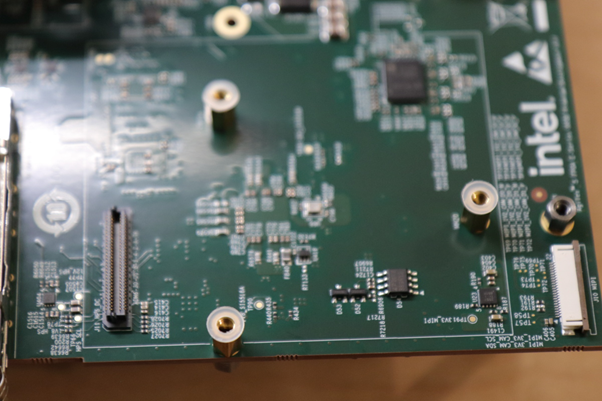
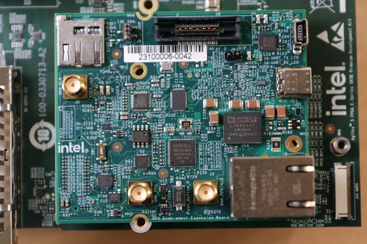
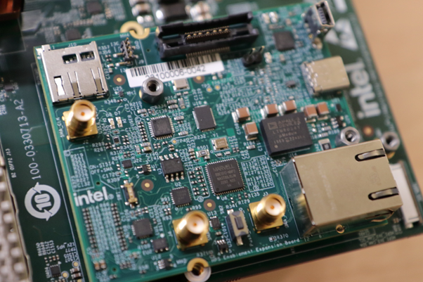

HPS GSRD User Guide
Introduction¶
Overview¶
The HPS Baseline System Example Design demonstrate basic HPS functionality on the Agilex 5 FPGA E-Series 065B Premium Development Kit (ES)
The design is comprised of the following components:
- Hardware Design
- HPS software:
- Arm Trusted Firmware
- U-Boot
- Linux Kernel
- Linux Drivers
- Sample Applications
Note: This release does not support booting from eMMC.
Prerequisites¶
The following are required to be able to fully exercise this System Example Design:
-
Altera® Agilex™ 5 FPGA E-Series 065A Premium Development Kit, ordering code DK-A5E065BB32AES1.
- HPS Enablement Expansion Board. Included with the development kit.
- HPS NAND Board. Enables eMMC and NAND storage options for HPS. Orderable separately.
- HPS Test Board. Supports SD card boot, and external Arm tracing. Orderable separately.
- Mini USB Cable. Included with the development kit.
- Micro USB Cable. Included with the development kit.
- Ethernet Cable. Included with the development kit.
- Micro SD card and USB card writer. Included with the development kit.
-
Host PC with:
- 64 GB of RAM. Less will be fine for only exercising the binaries, and not rebuilding the System Example Design.
- 200 GB of free disk space for Yocto buils
- Linux OS installed. Ubuntu 22.04LTS was used to create this page, other versions and distributions may work too
- Serial terminal (for example GtkTerm or Minicom on Linux and TeraTerm or PuTTY on Windows)
- Altera® Quartus® Prime Pro Edition Version 26.1
- Local Ethernet network, with DHCP server
- Internet connection. For downloading the files, especially when rebuilding the System Example Design.
Prebuilt Binaries¶
The System Example Design binaries are located at https://releases.rocketboards.org/2026.04/:
| HPS Daughter Card | Boot Source | Link |
|---|---|---|
| Enablement Board | SD Card | https://releases.rocketboards.org/2026.04/gsrd/agilex5_dk_a5e065bb32aes1_gsrd.baseline-a55/ |
| Enablement Board | SD Card | https://releases.rocketboards.org/2026.04/gsrd/agilex5_dk_a5e065bb32aes1_gsrd.baseline-a76/ |
| Enablement Board | QSPI | https://releases.rocketboards.org/2026.04/qspi/agilex5_dk_a5e065bb32aes1_qspi |
| Test Board | SD Card | https://releases.rocketboards.org/2026.04/debug/agilex5_dk_a5e065bb32aes1_debug |
Note: The System Example Design release for the HPS Enablement Board comes in two versions: one which uses a Cortex-A55 as the boot core, and one which uses a Cortex-A76 as the boot core. The rest of the functionality is the same, and all cores are enabled in Linux by default. The instructions on how to exercise the binaries are the same for both versions. And the instructions for rebuilding the binaries are similar, just using a different version of the GHRD which has the respective option selected.
Component Versions¶
Altera® Quartus® Prime Pro Edition Version 26.1 and the following software component versions integrate the 26.1 release.
Note: Regarding the Hardware Design components in the following table, only the device-specific one is used in this page.
| Component | Location | Branch | Commit ID/Tag |
|---|---|---|---|
| Agilex 3 Hardware Design | https://github.com/altera-fpga/agilex3c-ed-gsrd | main | QPDS26.1_REL_GSRD_PR |
| Agilex 5 Hardware Design - Include HPS Baseline System Example Design 2.0 baseline design + meta_custom | https://github.com/altera-fpga/agilex5e-ed-gsrd | main | QPDS26.1_REL_GSRD_PR |
| Agilex 7 Hardware Design | https://github.com/altera-fpga/agilex7f-ed-gsrd | main | QPDS26.1_REL_GSRD_PR |
| Stratix 10 Hardware Design | https://github.com/altera-fpga/stratix10-ed-gsrd | main | QPDS26.1_REL_GSRD_PR |
| Arria 10 Hardware Design | https://github.com/altera-fpga/arria10-ed-gsrd | main | QPDS26.1_REL_GSRD_PR |
| Linux | https://github.com/altera-fpga/linux-socfpga | socfpga-6.18.2-lts | QPDS26.1_REL_GSRD_PR |
| Arm Trusted Firmware | https://github.com/altera-fpga/arm-trusted-firmware | socfpga_v2.14.0 | QPDS26.1_REL_GSRD_PR |
| U-Boot | https://github.com/altera-fpga/u-boot-socfpga | socfpga_v2026.01 | QPDS26.1_REL_GSRD_PR |
| Yocto Project | https://git.yoctoproject.org/poky | scarthgap | latest |
| Yocto Project: meta-altera-fpga (for HPS Baseline System Example Design 2.0) | https://github.com/altera-fpga/meta-altera-fpga | scarthgap | QPDS26.1_REL_GSRD_PR |
| Yocto Project: meta-intel-fpga (for HPS Legacy System Example Design) | https://git.yoctoproject.org/meta-intel-fpga | scarthgap | latest |
| Yocto Project: meta-intel-fpga-refdes (for HPS Legacy System Example Design) | https://github.com/altera-fpga/meta-intel-fpga-refdes | scarthgap | QPDS26.1_REL_GSRD_PR |
| HPS Legacy System Example Design | https://github.com/altera-fpga/gsrd-socfpga | scarthgap | QPDS26.1_REL_GSRD_PR |
Note: The combination of the component versions indicated in the table above has been validated through the use cases described in this page and it is strongly recommended to use these versions together. If you decided to use any component with different version than the indicated, there is not warranty that this will work.
Release Notes¶
See https://github.com/altera-fpga/gsrd-socfpga/releases/tag/QPDS26.1_REL_GSRD_PR
Development Kit¶
This release targets the Agilex 5 FPGA E-Series 065B Premium Development Kit. Refer to board documentation for more information about the development kit.
{kind=link}
Installing HPS Daughtercard
This section shows how to install the included HPS Enablement Daughtercard. The installation for the other optional HPS Boards is similar.
1. Identify the correct thumb screws and washers needed, they are in a plastic bag: 
{kind=link}
2. Locate the area on the development board where the HPS Daughtercard needs to be installed: 
{kind=link}
3. Place the plastic washers on top of the three hex mounting posts: 
{kind=link}
4. Place HPS Board on top of the posts and washers: 
{kind=link}
5. Place the hex thumb screws on the two posts, as shown below. Note the 3rd one on the bottom is best unplaced as fully screwing that in may move the board. Also note the thumb screw close to the Ethernet connector is hard to screw, recommend to use small pliers and patience to make it secure. It is important that the HPS Board is secure, and does not move: 
{kind=link}
Note: If you need to swap HPS Boards frequently, it is recommended to remove the hex posts, and install the plastic washers between the PCB and the posts. This way you do not need to be careful for the washers not to move when you place the HPS Board on top of the posts. Note there are also plastic washers underneath the development board PCB, make sure to leave those in place when performing this operation
Changing MSEL
MSEL signals instruct the FPGA device on which configuration scheme to use. Configuration schemes used by the scenarios presented in this guide are JTAG and QSPI. MSEL is changed through dipswitch SW27. Only change the settings while the board is powered off.
Configuration OFF-OFF-OFF-OFF corresponds to JTAG:
{kind=link}
Configuration OFF-ON-ON-OFF corresponds to QSPI:
{kind=link}
Hardware Design Overview¶
The Hardware Design is an important part of the HPS Baseline System Example Design and consists of the following components:
- Hard Processor System (HPS)
- Dual core Arm Cortex-A76 processor
- Dual core Arm Cortex-A55 processor
- HPS Peripherals connected to HPS Enablement Expansion Board:
- Micro SD Card
- EMAC
- HPS JTAG debug
- I3C
- UART
- USB 3.1
- Multi-Ported Front End (MPFE) for HPS External Memory Interface (EMIF)
- FPGA Peripherals connected to Lightweight HPS-to-FPGA (LWH2F) AXI Bridge and JTAG to Avalon Master Bridge
- Three user LED outputs
- Four user DIP switch inputs
- Four user push-button inputs
- System ID
- FPGA Peripherals connected to HPS-to-FPGA (H2F) AXI Bridge
- 256KB of FPGA on-chip memory
{kind=link}
The GHRD allows hardware designers to access each peripheral in the FPGA portion of the SoC with System Console, through the JTAG master module. This signal-level access is independent of the driver readiness of each peripheral.
MPU Address Maps
This section presents the address maps as seen from the MPU side.
HPS-to-FPGA Address Map
The three FPGA windows in the MPU address map provide access to 256 GB of FPGA space. First window is 1 GB from 00_4000_0000, second window is 15 GB from 04_4000_0000, third window is 240 GB from 44_0000_0000. The following table lists the offset of each peripheral from the HPS-to-FPGA bridge in the FPGA portion of the SoC.
| Peripheral | Address Offset | Size (bytes) | Attribute |
|---|---|---|---|
| onchip_memory2_0 | 0x0 | 256K | On-chip RAM as scratch pad |
Lightweight HPS-to-FPGA Address Map
The the memory map of system peripherals in the FPGA portion of the SoC as viewed by the MPU, which starts at the lightweight HPS-to-FPGA base address of 0x00_2000_0000, is listed in the following table.
| Peripheral | Address Offset | Size (bytes) | Attribute |
|---|---|---|---|
| sysid | 0x0001_0000 | 32 | Unique system ID |
| led_pio | 0x0001_0080 | 16 | LED outputs |
| button_pio | 0x0001_0060 | 16 | Push button inputs |
| dipsw_pio | 0x0001_0070 | 16 | DIP switch inputs |
JTAG Master Address Map
There are three JTAG master interfaces in the design, one for accessing non-secure peripherals in the FPGA fabric, and another for accessing secure peripheral in the HPS through the FPGA-to-HPS Interface and another for FPGA fabric to SDRAM.
The following table lists the address of each peripheral in the FPGA portion of the SoC, as seen through the non-secure JTAG master interface.
| Peripheral | Address Offset | Size (bytes) | Attribute |
|---|---|---|---|
| onchip_memory2_0 | 0x0004_0000 | 256K | On-chip RAM |
| sysid | 0x0001_0000 | 32 | Unique system ID |
| led_pio | 0x0001_0080 | 16 | LED outputs |
| button_pio | 0x0001_0060 | 16 | Push button inputs |
| dipsw_pio | 0x0001_0070 | 16 | DIP switch inputs |
Interrupt Routing
The HPS exposes 64 interrupt inputs for the FPGA logic. The following table lists the interrupt connections from soft IP peripherals to the HPS interrupt input interface.
| Peripheral | Interrupt Number | Attribute |
|---|---|---|
| dipsw_pio | f2h_irq0[0] | 4 DIP switch inputs |
| button_pio | f2h_irq0[1] | 4 Push button inputs |
Exercise Prebuilt Binaries¶
This section presents how to use the prebuilt binaries included with the System Example Design.
Configure Board¶
1. Leave all jumpers and switches in their default configuration.
2. Install the appropriate HPS Daughtercard.
3. Connect mini USB cable from vertical connector on HPS Daughtercard to host PC. This is used for the HPS serial console.
4. Connect micro USB cable from development board to host PC. This is used by the tools for JTAG communication.
5. Connect Ethernet cable from HPS Board to an Ethernet switch connected to local network. Local network must provide a DCHP server.
Configure Serial Console¶
All the scenarios included in this release require a serial connection. This section presents how to configure the serial connection.
1. Install a serial terminal emulator application on your host PC:
- For Windows: TeraTerm or PuTTY are available
- For Linux: GtkTerm or Minicom are available
2. Power down your board if powered up. This is important, as once powered up, with the micro USB JTAG cable connected, a couple more USB serial ports will enumerate, and you may choose the wrong port.
3. Connect mini-USB cable from the vertical mini-USB connector on the HPS Board to the host PC
4. On the host PC, an USB serial port will enumerate. On Windows machines it will be something like COM4, while on Linux machines it will be something like /dev/tty/USB0.
5. Configure your serial terminal emulator to use the following settings:
- Serial port: as mentioned above
- Baud rate: 115,200
- Data bits: 8
- Stop bits: 1
- CRC: disabled
- Hardware flow control: disabled
6. Connect your terminal emulator
HPS Enablement Board¶
This section presents how to use HPS Enablement Board to boot from SD card, and also from QSPI.
Boot from SD Card¶
Write SD Card
1. Download SD card image archive from the prebuilt binaries, for either Cortex-A55 or Cortex-A76 as the boot core:
- https://releases.rocketboards.org/2026.04/gsrd/agilex5_dk_a5e065bb32aes1_gsrd.baseline-a55/sdimage.tar.gz
- https://releases.rocketboards.org/2026.04/gsrd/agilex5_dk_a5e065bb32aes1_gsrd.baseline-a76/sdimage.tar.gz
2. Extract the archive, obtaining the file gsrd-console-image-agilex5e.rootfs.wic
3. Write the gsrd-console-image-agilex5_devkit.wic. SD card image to the micro SD card using the included USB writer in the host computer:
- On Linux, use the
ddutility as shown next: - On Windows, use the Win32DiskImager program, available at https://sourceforge.net/projects/win32diskimager. For this, first rename the gsrd-console-image-agilex5_devkit.wic to an .img file (sdcard.img for example) and write the image as shown in the next figure:

Write QSPI Flash
1. Power down board
2. Set MSEL dipswitch SW27 to JTAG: OFF-OFF-OFF-OFF
3. Power up the board
4. Download and extract the JIC image:
When using Cortex-A55 as the boot core:
wget https://releases.rocketboards.org/2026.04/gsrd/agilex5_dk_a5e065bb32aes1_gsrd.baseline-a55/ghrd.hps.jic
When using Cortex-A76 as the boot core:
wget https://releases.rocketboards.org/2026.04/gsrd/agilex5_dk_a5e065bb32aes1_gsrd.baseline-a76/ghrd.hps.jic
5. Write the JIC file to QSPI:
Boot Linux
1. Power down board
2. Set MSEL dipswitch SW27 to ASX4 (QSPi): OFF-ON-ON-OFF
3. Power up the board
4. Wait for Linux to boot, use root as user name, and no password wil be requested.
Connect to Board Using SSH
1. Boot to Linux
2. Determine the board IP address using the ifconfig command:
root@agilex5devkit:~# ifconfig
eth0: flags=-28605<UP,BROADCAST,RUNNING,MULTICAST,DYNAMIC> mtu 1500
inet 192.168.1.153 netmask 255.255.255.0 broadcast 192.168.1.255
inet6 fe80::f0eb:c8ff:fec4:eed7 prefixlen 64 scopeid 0x20<link>
ether f2:eb:c8:c4:ee:d7 txqueuelen 1000 (Ethernet)
RX packets 649 bytes 45132 (44.0 KiB)
RX errors 0 dropped 226 overruns 0 frame 0
TX packets 56 bytes 8789 (8.5 KiB)
TX errors 0 dropped 0 overruns 0 carrier 0 collisions 0
device interrupt 23
lo: flags=73<UP,LOOPBACK,RUNNING> mtu 65536
inet 127.0.0.1 netmask 255.0.0.0
inet6 ::1 prefixlen 128 scopeid 0x10<host>
loop txqueuelen 1000 (Local Loopback)
RX packets 100 bytes 8408 (8.2 KiB)
RX errors 0 dropped 0 overruns 0 frame 0
TX packets 100 bytes 8408 (8.2 KiB)
TX errors 0 dropped 0 overruns 0 carrier 0 collisions 0
root username, no password will be requested:
Note: Make sure to replace the above IP address to the one matching the output of running
ifconfigon youir board.
Run Sample Applications
1. Boot to Linux
2. Change current folder to alteraFPGA folder
syscheck application
Press q to exit the syscheck application.
Control LEDs Connected to FPGA Fabric
The following LEDs are exercised:
| Led Number | Silkscreen | Component |
|---|---|---|
| 0 | USER_LED1 | D16 |
| 1 | USER_LED2 | D17 |
| 2 | USER_LED3 | D18 |
Note: USER_LED4/D19 is quickly blinking, and cannot be controlled from software.
1. In order to blink an LED in a loop, with a specific delay in ms, run the following command:
- The led_number specifies the desired LED, and is a value between 0 and 3.
- The delay_ms is a number that specifies the desired delay in ms between turning the LED on and off.
2. In order to turn an individual LED on or off, run the following command:
- The led_number specifies the desired LED, and is a value between 0 and 3.
- The state needs to be 0 to turn the LED off, and 1 to turn the LED on.
3. In order to scroll the FPGA LEDs with a specific delay, please run the following command:
The delay specifies the desired scrolling behavior:
- delay > 0 - specify new scrolling delay in ms, and start scrolling
- delay < 0 - stop scrolling
- delay = 0 - display current scroll delay
You can also control the LEDs directly by accessing the following sysfs entries:
- /sys/class/leds/fpga_led0/brightness
- /sys/class/leds/fpga_led1/brightness
- /sys/class/leds/fpga_led2/brightness
using commands such as:
cat /sys/class/leds/fpga_led0/brightness
echo -e 0 > /sys/class/leds/fpga_led0/brightness
echo -e 1 > /sys/class/leds/fpga_led1/brightness
Visit Board Web Page
Important Note: By default, the web server functionality is not built into the image. You need to rebuild the System Example Design with the corresponding option enabled in Kas configuration Altera Linux Applications: LED Control. If you use the default image, the webserver will sever a simple page that says "It works!"
1. Boot to Linux
2. Determine board IP address using ifconfig like in the previous scenario
3. Start a web browser and enter the IP address in the address bar
4. The web browser will display a page served by the web server running on the board.
{kind=link}
- You will able to see which LED are ON and OFF in LED Status.
- You can Start and Stop the LED from scrolling. Set the delay(ms) in the LED Lightshow box.
- You can controll each LED with ON and OFF button.
- Blink each LED by entering the delay(ms) and click on the BLINK button.
Boot from QSPI¶
This section presents how to boot from QSPI. One notable aspect is that you need to wipe the SD card partitioning information, as otherwise U-Boot SPL could find a valid SD card image, and try to boot from that first.
Wipe SD Card
Either write 1MB of zeroes at the beginning of the SD card, or remove the SD card from the HPS Daughter Card. You can use dd on Linux, or Win32DiskImager on Windows to achieve this.
Write QSPI Flash
1. Power down board
2. Set MSEL dipswitch SW27 to JTAG: OFF-OFF-OFF-OFF
3. Power up the board
4. Download and extract the JIC image:
To use Cortex-A55 as the boot core:
wget https://releases.rocketboards.org/2026.04/qspi/agilex5_dk_a5e065bb32aes1_qspi.baseline-a55/qspi_flash_image.hps.jic
jtagconfig --setparam 1 JtagClock 16M
quartus_pgm -c 1 -m jtag -o "pvi;qspi_flash_image.hps.jic"
To use Cortex-A76 as the boot core:
wget https://releases.rocketboards.org/2026.04/qspi/agilex5_dk_a5e065bb32aes1_qspi.baseline-a76/qspi_flash_image.hps.jic
jtagconfig --setparam 1 JtagClock 16M
quartus_pgm -c 1 -m jtag -o "pvi;qspi_flash_image.hps.jic"
5. Write JIC image to QSPI:
Boot Linux
1. Power down board
2. Set MSEL dipswitch SW27 to ASX4 (QSPi): OFF-ON-ON-OFF
3. Power up the board
4. Wait for Linux to boot, use root as user name, and no password wil be requested.
Note: On first boot, the UBIFS rootfilesystem is initialized, and that takes a few minutes. This will not happen on next reboots. See a sample log below:
[ 17.033558] UBIFS (ubi0:4): Mounting in unauthenticated mode
[ 17.039470] UBIFS (ubi0:4): background thread "ubifs_bgt0_4" started, PID 130
[ 17.061510] UBIFS (ubi0:4): start fixing up free space
[ 20.644496] random: crng init done
[ 27.120040] platform soc:leds: deferred probe pending
[ 243.190874] UBIFS (ubi0:4): free space fixup complete
[ 243.315909] UBIFS (ubi0:4): UBIFS: mounted UBI device 0, volume 4, name "rootfs"
[ 243.323290] UBIFS (ubi0:4): LEB size: 65408 bytes (63 KiB), min./max. I/O unit sizes: 8 bytes/256 bytes
[ 243.332653] UBIFS (ubi0:4): FS size: 167117440 bytes (159 MiB, 2555 LEBs), max 6500 LEBs, journal size
Rebuild Binaries Using Kas¶
This section presents how to rebuild the binaries for the HPS Enablement board, with Yocto, using Kas.
Kas is a Python-based lightweight build orchestration layer on top of BitBake/Yocto. Kas allows you to define your build environment in a YAML manifest, so you can perform checkout, environment setup, configuration, and build invocation with a single command. Kas provides a more maintainable build description, it offers improved reproducibility, reduced setup friction, and a clearer abstraction for managing multiple layers, revisions, and configuration fragments.
The software source code for this System Example Design is released inside the software/yocto_linux directory. Accessing the link will display a README page with details regarding the software.
For more details about Kas, refer to the official documentation at https://kas.readthedocs.io/en/latest/.
Kas Build Prerequisites¶
The same prerequisites as for regular Yocto build are required.
1. Make sure you have Yocto system requirements met: https://docs.yoctoproject.org/scarthgap/ref-manual/system-requirements.html#supported-linux-distributions.
The command to install the required packages on Ubuntu 22.04 is:
sudo apt-get update
sudo apt-get upgrade
sudo apt-get install openssh-server mc libgmp3-dev libmpc-dev gawk wget git diffstat unzip texinfo gcc \
build-essential chrpath socat cpio python3 python3-pip python3-pexpect xz-utils debianutils iputils-ping \
python3-git python3-jinja2 libegl1-mesa libsdl1.2-dev pylint xterm python3-subunit mesa-common-dev zstd \
liblz4-tool git fakeroot build-essential ncurses-dev xz-utils libssl-dev bc flex libelf-dev bison xinetd \
tftpd tftp nfs-kernel-server libncurses5 libc6-i386 libstdc++6:i386 libgcc++1:i386 lib32z1 \
device-tree-compiler curl mtd-utils u-boot-tools net-tools swig -y
On Ubuntu 22.04 you will also need to point the /bin/sh to /bin/bash, as the default is a link to /bin/dash:
Note: You can also use a Docker container to build the Yocto recipes, refer to https://rocketboards.org/foswiki/Documentation/DockerYoctoBuild for details. When using a Docker container, it does not matter what Linux distribution or packages you have installed on your host, as all dependencies are provided by the Docker container.
In addition to the above, you must also install python3-newt, and python3.10-venv with a command like this:
HPS Enablement Board¶
Build SD Card Binaries¶
Setup Environment
1. Create the top folder to store all the build artifacts:
sudo rm -rf agilex5_gsrd_20.enablement_sd
mkdir agilex5_gsrd_20.enablement_sd
cd agilex5_gsrd_20.enablement_sd
export TOP_FOLDER=`pwd`
Enable Quartus tools to be called from command line:
Build Hardware Design
cd $TOP_FOLDER
rm -rf agilex5_soc_devkit_ghrd && mkdir agilex5_soc_devkit_ghrd && cd agilex5_soc_devkit_ghrd
wget https://github.com/altera-fpga/agilex5e-ed-gsrd/releases/download/QPDS26.1_REL_GSRD_PR/a5ed065es-premium-devkit-oobe-baseline-a55.zip
unzip a5ed065es-premium-devkit-oobe-baseline-a55.zip
rm -f a5ed065es-premium-devkit-oobe-baseline-a55.zip
make baseline_a55-install
The following files are created:
$TOP_FOLDER/agilex5_soc_devkit_ghrd/install/binaries/baseline_a55.sof$TOP_FOLDER/agilex5_soc_devkit_ghrd/install/binaries/baseline_a55_hps_debug.sof$TOP_FOLDER/agilex5_soc_devkit_ghrd/install/binaries/ghrd.core.rbf
Build Yocto Using Kas
1. Create and enter a new Python virtual environment:
cd $TOP_FOLDER/agilex5_soc_devkit_ghrd/software/yocto_linux
python3 -m venv venv --system-site-packages
source venv/bin/activate
pip install --upgrade pip
pip install kas
pip install --upgrade kas
pip install kconfiglib
2. Copy the core.rbf file to where Kas expects it to be:
cp $TOP_FOLDER/agilex5_soc_devkit_ghrd/install/binaries/ghrd.core.rbf \
$TOP_FOLDER/agilex5_soc_devkit_ghrd/software/yocto_linux/meta-custom/recipes-fpga/fpga-bitstream/files/baseline_a55_hps_debug.core.rbf
3. Build Yocto with Kas:
The following relevant files are created in $TOP_FOLDER/agilex5_soc_devkit_ghrd/software/yocto_linux/build/tmp/deploy/images/agilex5e/:
gsrd-console-image-agilex5e.rootfs.wicu-boot-spl-dtb.hex
Note: If you experience build failures related to file-locks, you can work around these by reducing the parallelism of your build by running the following commands before running
kas:
export PARALLEL_MAKE="-j 8"
export BB_NUMBER_THREADS="8"
export BB_ENV_PASSTHROUGH_ADDITIONS="$BB_ENV_PASSTHROUGH_ADDITIONS PARALLEL_MAKE BB_NUMBER_THREADS"
Build QSPI Image
cd $TOP_FOLDER
rm -f baseline.hps.jic baseline.core.rbf
quartus_pfg \
-c agilex5_soc_devkit_ghrd/install/binaries/baseline_a55.sof baseline.jic \
-o device=MT25QU128 \
-o flash_loader=A5ED065BB32AE6SR0 \
-o hps_path=agilex5_soc_devkit_ghrd/software/yocto_linux/build/tmp/deploy/images/agilex5e/u-boot-spl-dtb.hex \
-o mode=ASX4 \
-o hps=1
The following file is created:
$TOP_FOLDER/baseline.hps.jic
Build QSPI Binaries¶
Setup Environment
1. Create the top folder to store all the build artifacts:
sudo rm -rf agilex5_gsrd_20.enablement_qspi
mkdir agilex5_gsrd_20.enablement_qspi
cd agilex5_gsrd_20.enablement_qspi
export TOP_FOLDER=`pwd`
Enable Quartus tools to be called from command line:
Build Hardware Design
cd $TOP_FOLDER
rm -rf agilex5_soc_devkit_ghrd && mkdir agilex5_soc_devkit_ghrd && cd agilex5_soc_devkit_ghrd
wget https://github.com/altera-fpga/agilex5e-ed-gsrd/releases/download/QPDS26.1_REL_GSRD_PR/a5ed065es-premium-devkit-oobe-baseline-a55.zip
unzip a5ed065es-premium-devkit-oobe-baseline-a55.zip
rm -f a5ed065es-premium-devkit-oobe-baseline-a55.zip
make baseline_a55-install
The following files are created:
$TOP_FOLDER/agilex5_soc_devkit_ghrd/install/binaries/baseline_a55.sof$TOP_FOLDER/agilex5_soc_devkit_ghrd/install/binaries/baseline_a55_hps_debug.sof$TOP_FOLDER/agilex5_soc_devkit_ghrd/install/binaries/ghrd.core.rbf
Build Yocto Using Kas
1. Create and enter a new Python virtual environment. A virtual environment allows you to install packages without impacting your global environment:
cd $TOP_FOLDER/agilex5_soc_devkit_ghrd/software/yocto_linux
python3 -m venv venv --system-site-packages
source venv/bin/activate
pip install --upgrade pip
pip install kas
pip install --upgrade kas
pip install kconfiglib
2. Copy the core.rbf file to where Kas expects it to be:
cp $TOP_FOLDER/agilex5_soc_devkit_ghrd/install/binaries/ghrd.core.rbf \
$TOP_FOLDER/agilex5_soc_devkit_ghrd/software/yocto_linux/meta-custom/recipes-fpga/fpga-bitstream/files/baseline_a55_hps_debug.core.rbf
3. Build Yocto with Kas:
Note: If you wish to customize your Linux image, you can use the
kas menucommand instead. The options here are explained in section Customizing Yocto Kas Build below.
The following relevant files are created in $TOP_FOLDER/agilex5_soc_devkit_ghrd/software/yocto_linux/build/tmp/deploy/images/agilex5e/:
u-boot-spl-dtb.hexu-boot.itbcore-image-minimal-agilex5e.rootfs_nor.ubifskernel.itbboot.scr.uimg
Build QSPI Image
1. Create the folder to contain all the files:
2. Link to the files that are needed from building the hardware design, and yocto:
ln -s $TOP_FOLDER/agilex5_soc_devkit_ghrd/install/binaries/baseline_a55.sof ghrd.sof
ln -s $TOP_FOLDER/agilex5_soc_devkit_ghrd/software/yocto_linux/build/tmp/deploy/images/agilex5e/u-boot-spl-dtb.hex .
ln -s $TOP_FOLDER/agilex5_soc_devkit_ghrd/software/yocto_linux/build/tmp/deploy/images/agilex5e/u-boot.itb u-boot.bin
ln -s $TOP_FOLDER/agilex5_soc_devkit_ghrd/software/yocto_linux/build/tmp/deploy/images/agilex5e/console-image-minimal-agilex5e.rootfs_nor.ubifs .
ln -s $TOP_FOLDER/agilex5_soc_devkit_ghrd/software/yocto_linux/build/tmp/deploy/images/agilex5e/kernel.itb .
ln -s $TOP_FOLDER/agilex5_soc_devkit_ghrd/software/yocto_linux/build/tmp/deploy/images/agilex5e/boot.scr.uimg .
ln -s $TOP_FOLDER/agilex5_soc_devkit_ghrd/software/yocto_linux/build/tmp/deploy/images/agilex5e/uboot.env .
ln -s $TOP_FOLDER/agilex5_soc_devkit_ghrd/software/yocto_linux/scripts/qspi_boot.pfg .
ln -s $TOP_FOLDER/agilex5_soc_devkit_ghrd/software/yocto_linux/scripts/ubinize_nor.cfg .
3. Create the root.ubi file and rename it to hps.bin as Programming File Generator needs the .bin extension:
5. Create the JIC file:
The following file will be created:
$TOP_FOLDER/qspi_boot/qspi_boot.hps.jic
Additional Guides¶
Customize Kas Build¶
The kas.yml file is the central configuration file used by Kas to define all components required for a reproducible Yocto build environment. It specifies the repositories, branches, layers, and build targets, as well as optional environment variables and machine settings. By consolidating this information into a single YAML file, kas.yml eliminates manual setup steps and ensures that builds can be easily replicated across systems or shared with collaborators. This makes it an essential part of version-controlled, automated build workflows.
Kas also offers Kconfig-based customizations to provide a flexible and user-friendly configuration experience. This enables you to select repositories, layers, and build targets through a structured menu interface instead of editing YAML files directly. This approach combines the clarity and reproducibility of Kas with the modular configurability of the Linux kernel’s Kconfig system, making it easier to tailor builds for different platforms or use cases while maintaining a consistent and automated setup.
Review the kas.yml file, the Kconfig options and associated documentation at https://github.com/altera-fpga/agilex5e-ed-gsrd/tree/QPDS26.1_REL_GSRD_PR/a5ed065es-premium-devkit-oobe/baseline-a55/software/yocto_linux.
In the build instructions, we did not use the Kconfig options, only the default options from kas.yml were used. This section shows how you can use kas menu to customize the build.
When using kas menu, the initial settings from kas.yml are customized with the user selected options through Kconfig, and are saved to a file called .config.yaml which is then used for build purposes.
1. Build the hardware design as mentioned before. Note the same hardware design is used for both booting from SD card and booting from QSPI.
2. Copy the core.rbf file to where Kas needs it to be. Note that the filename when using Kconfig is different than when using the kas.yml alone (top.core.rbf vs baseline_a55_hps_debug.core.rbf)
cp $TOP_FOLDER/agilex5_soc_devkit_ghrd/install/binaries/ghrd.core.rbf \
$TOP_FOLDER/agilex5_soc_devkit_ghrd/software/yocto_linux/meta-custom/recipes-fpga/fpga-bitstream/files/top.core.rbf
3. Create an enter a new Python virtual environment, not to interfere with the current system Python packages:
cd $TOP_FOLDER/agilex5_soc_devkit_ghrd/software/yocto_linux
python3 -m venv venv --system-site-packages
source venv/bin/activate
pip install --upgrade pip
pip install kas
pip install --upgrade kas
pip install kconfiglib
4. Run kas menu:
5. You will be presented with a Kconfig text menu, similar to the ones from Linux Kernel & U-Boot:
{kind=link}
6. Go to FPGA Options screen and make any changes you desire:
{kind=link}
7. Go to Image Target Selection screen and select which images to be built:
{kind=link}
8. Go to Networking Libraries and Apllications screen and select desired options:
{kind=link}
9. Go to Altera Linux Applications screen and select the desired applications:
{kind=link}
10. Go to Example Applications screen and select what you need:
{kind=link}
11. Once you have selected all the options you want, you can clik the Build button to start the build process:
{kind=link}
See below the locations where different components selected above are located in the generated filesystem:
/usr/bin/hello-world
/usr/bin/coremark
/usr/bin/etherlink
/home/root/alteraFPGA/blink
/home/root/alteraFPGA/scroll_client
/home/root/alteraFPGA/syschk
/home/root/alteraFPGA/toggle
Build Kas Interactively¶
In addition to using kas build to build Yocto based on the kas.yml and kas menu to build Yocto based on Kconfig options selected from the text GUI, there is also the kas shell option, which allows you to build Yocto interactively.
1. Build the hardware design as mentioned before. Note the same hardware design is used for both booting from SD card and booting from QSPI.
2. Copy the core.rbf file to where bitbake needs it to be.
cp $TOP_FOLDER/agilex5_soc_devkit_ghrd/install/binaries/ghrd.core.rbf \
$TOP_FOLDER/agilex5_soc_devkit_ghrd/software/yocto_linux/meta-custom/recipes-fpga/fpga-bitstream/files/
3. Create an enter a new Python virtual environment, not to interfere with the current system Python packages:
cd $TOP_FOLDER/agilex5_soc_devkit_ghrd/software/yocto_linux
python3 -m venv venv --system-site-packages
source venv/bin/activate
pip install --upgrade pip
pip install kas
pip install --upgrade kas
pip install kconfiglib
4. You can optionally use kas menu to change settings, and at the end press the Save button instead of the Build button. This will save the custom configuration in the file .config.yaml.
5. Run kas shell, there are several options:
| Command | Description |
|---|---|
kas shell |
Use the configuration from the .config.yaml resulted from using kas menu |
kas shell kas.yml |
Use the default configuration for SD card boot |
kas shell kas.yml:qspi_boot_src.yml |
Use the default configuration for QSPI boot |
6. Use regular bitbake commands. For example to simply build the rootfs, use:
Rebuild Binaries Using Legacy Yocto Build Script¶
This section presents how to rebuild the binaries for the HPS Test board, with Yocto, using the legacy build script.
Note: The binaries for the HPS Enablement board are built using Kas, which is the new method of building the System Example Design.
Yocto Build Prerequisites¶
1. Make sure you have Yocto system requirements met: https://docs.yoctoproject.org/scarthgap/ref-manual/system-requirements.html#supported-linux-distributions.
The command to install the required packages on Ubuntu 22.04 is:
sudo apt-get update
sudo apt-get upgrade
sudo apt-get install openssh-server mc libgmp3-dev libmpc-dev gawk wget git diffstat unzip texinfo gcc \
build-essential chrpath socat cpio python3 python3-pip python3-pexpect xz-utils debianutils iputils-ping \
python3-git python3-jinja2 libegl1-mesa libsdl1.2-dev pylint xterm python3-subunit mesa-common-dev zstd \
liblz4-tool git fakeroot build-essential ncurses-dev xz-utils libssl-dev bc flex libelf-dev bison xinetd \
tftpd tftp nfs-kernel-server libncurses5 libc6-i386 libstdc++6:i386 libgcc++1:i386 lib32z1 \
device-tree-compiler curl mtd-utils u-boot-tools net-tools swig -y
On Ubuntu 22.04 you will also need to point the /bin/sh to /bin/bash, as the default is a link to /bin/dash:
Note: You can also use a Docker container to build the Yocto recipes, refer to https://rocketboards.org/foswiki/Documentation/DockerYoctoBuild for details. When using a Docker container, it does not matter what Linux distribution or packages you have installed on your host, as all dependencies are provided by the Docker container.
HPS Test Board¶
This section presents how to build the binaries for HPS Test Board.
Build SD Card Binaries¶
The following diagram shows how the binaries are built for the HPS Test Daughtercard:
{kind=link}
Setup Environment
1. Create the top folder to store all the build artifacts:
Enable Quartus tools to be called from command line:
Build Hardware Design
cd $TOP_FOLDER
rm -rf agilex5_soc_devkit_ghrd && mkdir agilex5_soc_devkit_ghrd && cd agilex5_soc_devkit_ghrd
wget https://github.com/altera-fpga/agilex5e-ed-gsrd/releases/download/QPDS26.1_REL_GSRD_PR/a5ed065es-premium-devkit-debug2-legacy-baseline.zip
unzip a5ed065es-premium-devkit-debug2-legacy-baseline.zip
rm -f a5ed065es-premium-devkit-debug2-legacy-baseline.zip
make legacy_baseline-build
pushd software/hps_debug && ./build.sh && popd
quartus_pfg -c output_files/legacy_baseline.sof \
output_files/legacy_baseline_hps_debug.sof \
-o hps_path=software/hps_debug/hps_wipe.ihex
cd ..
The following files are created:
$TOP_FOLDER/agilex5_soc_devkit_ghrd/output_files/legacy_baseline.sof$TOP_FOLDER/agilex5_soc_devkit_ghrd/output_files/legacy_baseline_hps_debug.sof
Build Core RBF
cd $TOP_FOLDER
rm -f ghrd_a5ed065bb32ae6sr0.rbf
quartus_pfg -c agilex5_soc_devkit_ghrd/output_files/legacy_baseline_hps_debug.sof ghrd_a5ed065bb32ae6sr0.rbf -o hps=1
The following file is created:
$TOP_FOLDER/ghrd_a5ed065bb32ae6sr0.core.rbf
Set Up Yocto
1. Clone the Yocto script and prepare the build:
cd $TOP_FOLDER
rm -rf gsrd-socfpga
git clone -b QPDS26.1_REL_GSRD_PR https://github.com/altera-fpga/gsrd-socfpga
cd gsrd-socfpga
. agilex5_dk_a5e065bb32aes1-gsrd-build.sh
build_setup
Customize Yocto
Replace the file $WORKSPACE/meta-intel-fpga-refdes/recipes-bsp/ghrd/files/agilex5_dk_a5e065bb32aes1_debug2_ghrd.core.rbf with the rebuilt core.rbf file:
CORE_RBF=$WORKSPACE/meta-intel-fpga-refdes/recipes-bsp/ghrd/files/agilex5_dk_a5e065bb32aes1_debug2_ghrd.core.rbf
rm -f $CORE_RBF
ln -s $TOP_FOLDER/ghrd_a5ed065bb32ae6sr0.core.rbf $CORE_RBF
Build Yocto
Build Yocto:
Gather files:
The following files are created:
$TOP_FOLDER/gsrd-socfpga/agilex5_dk_a5e065bb32aes1-gsrd-images/u-boot-agilex5-socdk-gsrd-atf/u-boot-spl-dtb.hex$TOP_FOLDER/gsrd-socfpga/agilex5_dk_a5e065bb32aes1-gsrd-images/sdimage.tar.gz
Build QSPI Image
cd $TOP_FOLDER
rm -f ghrd_a5ed065bb32ae6sr0.hps.jic ghrd_a5ed065bb32ae6sr0.core.rbf
quartus_pfg \
-c agilex5_soc_devkit_ghrd/output_files/legacy_baseline.sof ghrd_a5ed065bb32ae6sr0.jic \
-o device=MT25QU128 \
-o flash_loader=A5ED065BB32AE6SR0 \
-o hps_path=gsrd-socfpga/agilex5_dk_a5e065bb32aes1-gsrd-images/u-boot-agilex5-socdk-gsrd-atf/u-boot-spl-dtb.hex \
-o mode=ASX4 \
-o hps=1
The following file is created:
$TOP_FOLDER/ghrd_a5ed065bb32ae6sr0.hps.jic
Build HPS RBF
This is an optional step, in which you can build an HPS RBF file, which can be used to configure the HPS through JTAG instead of QSPI though the JIC file.
cd $TOP_FOLDER
rm -f ghrd_a5ed065bb32ae6sr0.hps.rbf
quartus_pfg \
-c agilex5_soc_devkit_ghrd/output_files/legacy_baseline.sof ghrd_a5ed065bb32ae6sr0.rbf \
-o hps_path=gsrd-socfpga/agilex5_dk_a5e065bb32aes1-gsrd-images/u-boot-agilex5-socdk-gsrd-atf/u-boot-spl-dtb.hex \
-o hps=1
The following file is created:
$TOP_FOLDER/ghrd_a5ed065bb32ae6sr0.hps.rbf
Additional Guides¶
Update kernel.itb File¶
The kernel.itb file is a Flattattened Image Tree (FIT) file that includes the following components:
- Linux kernel.
- Several board configurations that indicate what components from the kernel.itb (Linux kernel, device tree and 2nd Phase fabric design) should be used for a specific board.
- Linux device tree*.
- 2nd Phase Fabric Design*.
* One or more of these components to support the different board configurations.
The kernel.itb is created from a .its (Image Tree Source file) that describes its structure. In the HPS Legacy System Example Design 1.0, the kernel.itb file is located in the following directory, where you can find also all the components needed to create it, including the .its file:
- $TOP_FOLDER/gsrd-socfpga/<device-devkit>-gsrd-rootfs/tmp/work/<device-devkit>-poky-linux/linux-socfpga-lts/<linux branch>+git/linux-<device devkit>-standard-build/
If you want to modify the kernel.itb by replacing one of the component or modifying any board configuration, you can do the following:
-
Install mtools package in your Linux machine.
-
Go to the folder in which the kernel.itb is being created under the HPS Legacy System Example Design 1.0.
-
In the .its file, observe the components that integrates the kernel.itb identifying the nodes as indicated next:
images node:
- kernel node - Linux kernel defined with the data parameter in the node.
- fdt-X node - Device tree X defined with the data parameter in the node.
- fpga-X node - 2nd Phase FPGA Configuration .rbf defined with the data parameter in the node.configurations node:
- board-X node - Board configuration with the name defined with the description parameter. The components for a specific board configuration are defined with the kernel, fdt and fpga parameters. -
In this directory, you can replace any of the files corresponding to any of the components that integrate the kernel.itb, or you can also modify the .its to change the name/location of any of the components or change the board configuration.
-
Finally, you need to re-generate the new kernel.itb as indicated next.
At this point you can use the new kernel.itb as needed. Some options could be:
- Use U-Boot to bring it to your SDRAM board through TFTP to boot Linux or to write it to a SD Card device
- Update the flash image (QSPI, SD Card, eMMC or NAND) from your working machine.
Update SD Card Image¶
As part of the Yocto HPS Legacy System Example Design build flow, the SD Card image is built for the SD Card boot flow. This image includes a couple of partitions. One of these partition (a FAT32) includes the U-Boot proper, a Distroboot boot script and the Linux .itb - which includes the Linux kernel image, , the Linux device tree, the phase 2 FPGA configuration bitstream and board configuration (there may be several versions of these last 3 components). The 2nd partition (an EXT3 or EXT4 ) includes the Linux file system.
{kind=link}
If you want to replace any the components or add a new item in any of these partitions, without having to run again the Yocto build flow.
This can be done through the wic application available on the Poky repository that is included as part of the HPS Legacy System Example Design build directory: $TOP_FOLDER/gsrd-socfpga/poky/scripts/wic
This command requires to be run in the Yocto build environment that can be setup as shown next in a Linux terminal:
You can verify that the Yocto environment has been setup using the which bitbake command, which will respond with the path of the bitbake command located at poky/bitbake/bin/bitbake.The wic command allows you to inspect the content of a SD Card image, delete, add or replace any component inside of the image. This command is also provided with help support:
$ $TOP_FOLDER/gsrd-socfpga/poky/scripts/wic help
Creates a customized OpenEmbedded image.
Usage: wic [--version]
wic help [COMMAND or TOPIC]
wic COMMAND [ARGS]
usage 1: Returns the current version of Wic
usage 2: Returns detailed help for a COMMAND or TOPIC
usage 3: Executes COMMAND
COMMAND:
list - List available canned images and source plugins
ls - List contents of partitioned image or partition
rm - Remove files or directories from the vfat or ext* partitions
help - Show help for a wic COMMAND or TOPIC
write - Write an image to a device
cp - Copy files and directories to the vfat or ext* partitions
create - Create a new OpenEmbedded image
:
:
-
The wic ls command allows you to inspect or navigate over the directory structure inside of the SD Card image. For example you can observe the partitions in the SD Card image in this way:
# Here you can inspect the content a wic image see the 2 partitions inside of the SD Card image $ $TOP_FOLDER/gsrd-socfpga/poky/scripts/wic ls my_image.wic Num Start End Size Fstype 1 1048576 525336575 524288000 fat32 2 525336576 2098200575 1572864000 ext4 # Here you can naviagate inside of the partition 1 $ $TOP_FOLDER/gsrd-socfpga/poky/scripts/wic ls my_image.wic:1 Volume in drive : is boot Volume Serial Number is 9D2B-6341 Directory for ::/ BOOTSC~1 UIM 2431 2011-04-05 23:00 boot.scr.uimg kernel itb 15160867 2011-04-05 23:00 u-boot itb 1052180 2011-04-05 23:00 3 files 16 215 478 bytes 506 990 592 bytes free -
The wic rm command allows you to delete any of the components in the selected partition. For example, you can delete the kernel.itb image from the partition 1(fat32 partition).
-
The wic cp command allows you to copy any new item or file from your Linux machine to a specific partition and location inside of the SD Card image. For example, you can copy a new kernel.itb to the partition 1.
NOTE: The wic application also allows you to modify any image with compatible vfat and ext* type partitions which also covers images used for eMMC boot flow.
Build and Exercise Roll Your Own Binaries¶
The "Roll Your Own" enables you to build a Linux system without using Yocto.
The key differences versus the Yocto/Kas build flow are:
- Each software component is built separately: ATF, U-Boot, Linux kernel, Linux root filesystem
- FPGA fabric is not configured
- The device tree from Linux kernel source code is used. This device tree does not enable IP from the FPGA fabric side
- Root filesystem is built with Toybox
- Root filesystem is used as initramfs. That makes it immutable, changes are not saved
- Binaries are not included, just build instructions
- Just the HPS Enablement Daughtercard, boot from SD card scenario is supported
HPS Enablement Board¶
Build SD Card Binaries¶
The overall build flow is presented in the following diagram:
{kind=link}
The following diagram shows details on the flow used by the included roll your own build script:
{kind=link}
The complete build instructions are presented below.
Prerequisites
The mtools are required in order to create the SD card image containing a single FAT partition. Install them on your Linux host. For Ubuntu you can use the following command:
Setup Environment
1. Create the top folder to store all the build artifacts:
sudo rm -rf agilex5_gsrd_20.ryo
mkdir agilex5_gsrd_20.ryo
cd agilex5_gsrd_20.ryo
export TOP_FOLDER=`pwd`
Enable Quartus tools to be called from command line:
Build Hardware Design
cd $TOP_FOLDER
rm -rf agilex5_soc_devkit_ghrd && mkdir agilex5_soc_devkit_ghrd && cd agilex5_soc_devkit_ghrd
wget https://github.com/altera-fpga/agilex5e-ed-gsrd/releases/download/QPDS26.1_REL_GSRD_PR/a5ed065es-premium-devkit-oobe-baseline-a55.zip
unzip a5ed065es-premium-devkit-oobe-baseline-a55.zip
rm -f a5ed065es-premium-devkit-oobe-baseline-a55.zip
make baseline_a55-install
The following files are created:
$TOP_FOLDER/agilex5_soc_devkit_ghrd/install/binaries/baseline_a55.sof$TOP_FOLDER/agilex5_soc_devkit_ghrd/install/binaries/baseline_a55_hps_debug.sof$TOP_FOLDER/agilex5_soc_devkit_ghrd/install/binaries/ghrd.core.rbf
Build Software Components
1. Run the provided script to build the embedded software components: ATF, U-Boot, Linux Kernel & Device Tree, Linux rootfs:
The following relevant files are created in $TOP_FOLDER/agilex5_soc_devkit_ghrd/software/ryo_linux/build_output/:
sdcard.imgu-boot-socfpga/spl/u-boot-spl-dtb.hex
Build QSPI Image
cd $TOP_FOLDER/agilex5_soc_devkit_ghrd/software/ryo_linux/build_output/
rm -f output_file.hps.jic output_file.core.rbf
quartus_pfg \
-c $TOP_FOLDER/agilex5_soc_devkit_ghrd/install/binaries/baseline_a55.sof output_file.jic \
-o device=MT25QU128 \
-o flash_loader=A5ED065BB32AE6SR0 \
-o hps_path=u-boot-socfpga/spl/u-boot-spl-dtb.hex \
-o mode=ASX4 \
-o hps=1
The following file is created in $TOP_FOLDER/agilex5_soc_devkit_ghrd/software/ryo_linux/build_output/:
output_file.hps.jic
Refer to the Boot from SD Card section for details on how to write the SD card image and QSPI image, then boot to Linux. Note that the roll your own root filesystem is immutable, so any changes you may make will be discarded once you power cycle the board or reboot Linux. Also note that it is a simple, small root filesystem, without the sample applications or the webserver.
Notices & Disclaimers¶
Altera® Corporation technologies may require enabled hardware, software or service activation. No product or component can be absolutely secure. Performance varies by use, configuration and other factors. Your costs and results may vary. You may not use or facilitate the use of this document in connection with any infringement or other legal analysis concerning Altera or Intel products described herein. You agree to grant Altera Corporation a non-exclusive, royalty-free license to any patent claim thereafter drafted which includes subject matter disclosed herein. No license (express or implied, by estoppel or otherwise) to any intellectual property rights is granted by this document, with the sole exception that you may publish an unmodified copy. You may create software implementations based on this document and in compliance with the foregoing that are intended to execute on the Altera or Intel product(s) referenced in this document. No rights are granted to create modifications or derivatives of this document. The products described may contain design defects or errors known as errata which may cause the product to deviate from published specifications. Current characterized errata are available on request. Altera disclaims all express and implied warranties, including without limitation, the implied warranties of merchantability, fitness for a particular purpose, and non-infringement, as well as any warranty arising from course of performance, course of dealing, or usage in trade. You are responsible for safety of the overall system, including compliance with applicable safety-related requirements or standards. © Altera Corporation. Altera, the Altera logo, and other Altera marks are trademarks of Altera Corporation. Other names and brands may be claimed as the property of others.
OpenCL* and the OpenCL* logo are trademarks of Apple Inc. used by permission of the Khronos Group™.
Created: May 25, 2024